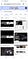

Hip hop driven blogging

If rappers knew the power of blogging they would be the most powerfull culture changers. Hip hop musical style is so tight to online content. It is about playing with word vocally and blogging is all about that but not for talking to search engines but real people that seek ideas and a better society.
Hip hop driven blogging is this new culture tool born from africa that is now used in new York City.
Proud to be it creator
It is live with sound and animated text.
Hey, it is a new kind of online content born from Dakar.
